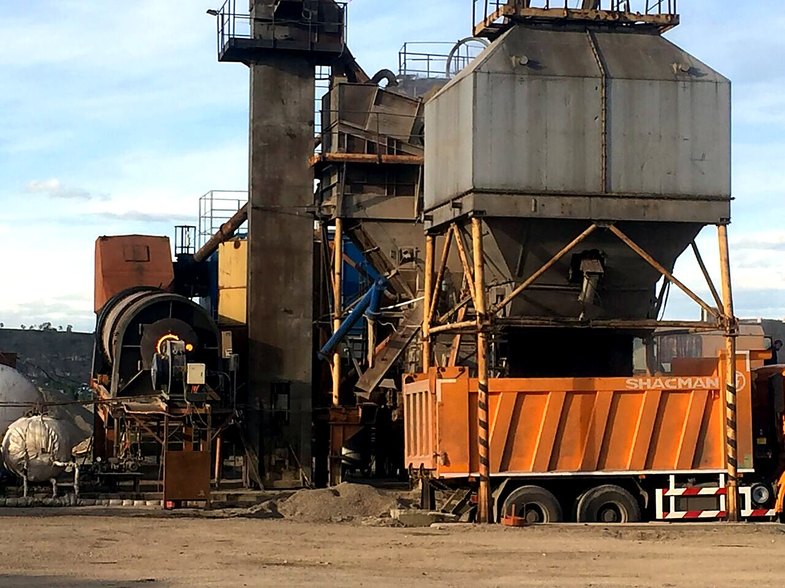
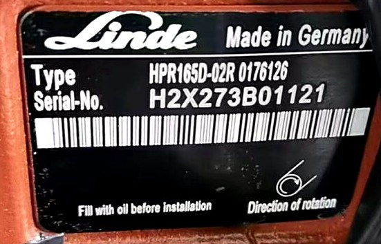
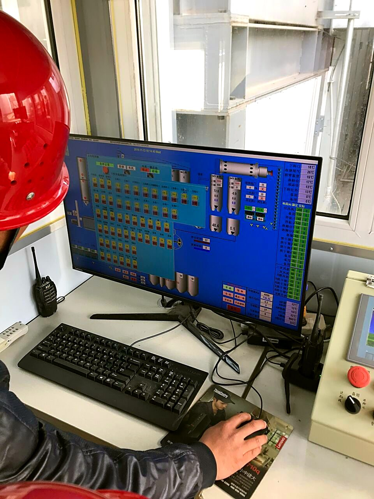

Превращаем карьер в прибыль.
ДСК и АБЗ с китайских заводов с ответственностью за результат: подбор, поставка, шеф-монтаж и сервис. Иркутск, с 2011 года.
- Производительность
- 100–450 т/ч
- В работе
- 13 лет
- Сервисных центра
- 3
- Языка инженеров
- 4

Три направления работы
Дробильно-сортировочные комплексы
Стационарные и мобильные ДСК под сырьё, фракции и площадку: от щековой дробилки до грохота, с монтажом и запуском нашими инженерами.
- Серии
- PE, PY, DP, XHP
- Производительность
- 100–450 т/ч
- Фракции продукта
- 0–5, 5–20, 20–40, 40–70 мм


Асфальтобетонные заводы
Стационарные, мобильные и рециклинговые АБЗ по новым ГОСТам: сушильный барабан, битумное хозяйство, дозирование и автоматика управления.
- Серии
- QC, QSQ, QSRX
- Горелки
- A-TECH, EBICO, RIELLO, BALTUR
- Автоматика
- Honeywell, Siemens
Сервис и комплектующие
Запчасти к российским и импортным АБЗ и ДСК, изготовление деталей по чертежам заказчика, ремонт узлов.
Иркутск · Владивосток · Москва
Подойдёт ли под задачу?
Выберите сырьё, производительность и фракцию — соберём предварительную цепочку оборудования за минуту.
- Первичное дроблениеЩековая дробилка PE-750×1060
- Вторичное дроблениеКонусная гидравлическая DP-200
- СортировкаГрохот 3YZK1860, 2 деки
- ПродуктФракция 5–20 мм
Подбор на странице предварительный: точный состав, компоновку и стоимость считает инженер в КП.
Получить этот расчёт в КП| Задача | Цепочка |
|---|---|
| Гранит, 100–150 т/ч | PE-600×900 → DP-100 → 3YZK1548 |
| Гранит, 250–450 т/ч | PE-750×1060 → DP-200 → 3YZK1860 |
| Известняк, 100–250 т/ч | PE-600×900 → 3YZK1860 |
| Фрезерованный асфальт | PE-600×900 → 3YZK1860, возврат в АБЗ |
Что именно приедет на площадку
Состав поставки зафиксирован в договоре: спецификация — приложение к контракту, а не письмо в мессенджере.
| Позиция | Состав примера |
|---|---|
| Первичное дробление | Щековая дробилка PE-600×900 |
| Вторичное дробление | Конусная дробилка DP-100 |
| Сортировка | Грохот 3YZK1860 |
| Транспортировка | Конвейеры 650 и 800 мм, 4 шт. |
| Управление | Шкаф управления и автоматика |
| ЗИП | Комплект на 12 месяцев эксплуатации |
| Документы | Паспорт, схемы, инструкции на русском |
Состав — пример линии 150 т/ч для гранита; вашу конфигурацию инженер считает под сырьё и площадку.


Кто запустит — наши инженеры
- Шеф-монтаж: надзор сборки механической части по схемам завода.
- Надзор электромонтажа и подключение систем управления.
- Холодный пуск и проверка узлов под нагрузкой без сырья.
- Вывод на проектную производительность по сырью заказчика.
- Обучение смен заказчика на рабочей линии.
- Сдача линии с актом выхода на производительность.
Инженер СДС говорит с заводом на китайском, английском и корейском и решает вопросы на монтаже сам — без переводчика и переписки через посредника.

Что будет после запуска
Сервисные центры в Иркутске, Владивостоке и Москве: запчасти, ремонт, изготовление деталей по чертежам заказчика.
- Заявка с фото шильдика и номером узла — по телефону или почтой.
- Ответ инженера: наличие на складе или срок изготовления на заводе-партнёре.
- Отгрузка на объект; при заказе комплектующих от 1,5 млн ₽ доставка по РФ бесплатная.


Ремонт и техподдержка остаются за инженером, который запускал линию.
Заказать может любой. Запустить — нет.
Заказать ДСК в Китае сегодня может любой, кто нашёл адрес завода. Вопрос другой: кто ответит, когда линия не запустится.
- Оборудование не выйдет на нужную производительность.
- Состав линии считается под сырьё, фракции и площадку; приёмка — акт выхода на производительность.
- После оплаты поставщик исчезнет.
- Договор с фиксированной спецификацией; сервисные центры в трёх городах остаются с вами после запуска.
- Запчасти придётся ждать месяцами.
- Складские позиции и изготовление по чертежам; ответ инженера по заявке в рабочий день.
- Монтаж ляжет на плечи заказчика.
- Шеф-монтаж и пусконаладка — наши инженеры, на площадке и на связи с заводом.
13 лет реальных запусков
- 2012 Усть-Кут: шеф-монтаж и пусконаладка мобильного ДСК SAMYOUNG 250 т/ч.
- 2013 Горелка A-TECH для асфальтосмесителя LB2000.
- 2014 Дробильно-сортировочный комплекс 150 т/ч.
- 2015 Сушильный барабан для АБЗ.
- 2016 Два силоса по 35 м³.
- 2017 Щековая дробилка PE.
- 2019 Визит на завод SBM/ZENITH с заказчиками, поставка ДСК 200 т/ч.
- 2020 Битумное хранилище.
- 2022 Шнековые транспортёры для LB1500, металлодетекторы 650/800 мм.

Отвечают инженеры
Как проходит подбор оборудования?
Обсуждаем задачу: тип производства, сырьё, требуемые фракции или продукт, условия площадки. На основе этого подбираем конфигурацию линии и формируем коммерческое предложение.
Кто выполняет монтаж и запуск?
Шеф-монтаж и пусконаладку выполняют наши инженеры на объекте. Оборудование выводится на рабочую производительность и передаётся заказчику.
Как решается вопрос с запчастями?
Поставляем запчасти к российским и импортным АБЗ и ДСК. Организуем изготовление деталей по чертежам на заводах-партнёрах. Сервисные центры — в Иркутске, Владивостоке и Москве.
С какими производителями вы работаете?
Дробление и сортировка: LIMING, ZENITH/SBM, DINGSHENG, VANGUARD. АБЗ и бетон: QUANCHENG, Echo Machinery, SINOROADER, DOM Machinery. Горелки и автоматика: A-TECH, EBICO, RIELLO, BALTUR, Honeywell, Siemens.
Есть ли доставка по России?
Бесплатная доставка по РФ при заказе комплектующих от 1,5 млн ₽. Условия поставки оборудования обсуждаются при подборе.
Как связаться со специалистом?
Позвоните по телефону +7 (3952) 43-67-23 или +7 (924) 605-50-05, напишите на info@sdors.ru. Офис в Иркутске, ул. Рабочего Штаба, 1/7, пн–пт 9:30–18:00.
Расскажите задачу — вернём расчёт
Пришлите сырьё, нужные фракции и производительность — инженер вернёт предварительную конфигурацию линии и сроки поставки.
Запросить КП- Почта
- info@sdors.ru
- Офис
- Иркутск, ул. Рабочего Штаба, 1/7
- Часы
- пн–пт 9:30–18:00